Google Maps : trouver des leads
01 · Objectif
01. Je construis une machine de prospection réelle
Je ne fais pas un exercice théorique. Je pars d’une base de leads déjà nettoyée et je crée un système qui peut envoyer via Gmail, suivre les réponses et relancer avec prudence.
10 emails/jourrepère
Gmail + OpenAIrepère
VPS 24/7repère
02 · Continuité
02. La séance 19 arrive après la base propre
Google Maps, Apify, Data.gouv et le nettoyage CRM ont servi à une chose : créer un fichier assez fiable pour automatiser sans faire n’importe quoi.
Apify : enrichir les contacts
Data.gouv : consolider les données légales
Séance 18 : nettoyer, scorer, segmenter
03 · Point de départ
03. Le fichier source passe avant le système
Je ne demande pas à Codex d’envoyer des emails depuis un dossier ambigu. Je lui donne un seul fichier officiel : `leads-prospection-ready.xlsx`.
04 · Garde-fou
04. La règle : pas d’envoi avant audit
Un système d’envoi branché sur une mauvaise base devient dangereux. Je vérifie d’abord les onglets, les colonnes, les statuts et les exclusions.
Un mauvais fichier peut transformer une bonne automatisation en problème commercial.
05 · Cadence
05. Je limite volontairement le volume
Je pars sur une cadence prudente : dix sorties maximum par jour, relances incluses. L’objectif est de tester la qualité, pas de brûler le compte Gmail.
| Réglage | Valeur | Pourquoi |
|---|---|---|
| DAILY_SEND_LIMIT | 10 | Limiter le risque et contrôler la qualité |
| Fenêtre d’envoi | 09:30-11:30 | Garder un comportement humain |
| Week-end | off | Ne pas envoyer quand le contexte est mauvais |
06 · Compétence IA
06. Le vrai apprentissage : créer un système
Ce que tu dois retenir dépasse Gmail. Tu apprends à transformer une idée en architecture : contexte, contraintes, fichiers, tests, production.
IdéePrompt cadréCodex exécuteJe testeJe corrigeJe rends réutilisable
07 · Business
07. Je veux un système vendable
Ce type d’automatisation peut être facturé cher si elle est fiable : elle remplace une suite d’outils bricolés par un moteur simple, maintenable et contrôlé.
Un VPS dédié au client
Une base XLSX propre
Des relances automatiques
Un tracking exportable
Une limite quotidienne claire
08 · Méthode
08. Je ne veux pas une boucle infinie
Le mauvais réflexe : demander, regarder, corriger, recommencer sans fin. Le bon réflexe : donner assez de contexte dès le début pour réduire les allers-retours.
| Avant | Après |
|---|---|
| Prompt vague puis corrections sans fin | Prompt complet avec fichiers, contraintes et sortie attendue |
| Le modèle improvise | Codex sait quoi lire et quoi refuser |
| Tu subis le résultat | Tu pilotes le système |
09 · Terminal
09. La commande Codex est lancée dans le bon dossier
Je lance Codex dans `06-leads`, parce que le dossier courant détermine ce que l’agent peut lire, créer et vérifier.
Commande / consigne
cd ~/Desktop/mon-business/06-leads
codex --dangerously-bypass-approvals-and-sandbox10 · Checklist
10. Ce que tu dois avoir avant de continuer
Si un seul élément manque, tu t’arrêtes et tu corriges. La suite dépend de ces fondations.
- 01
Le XLSX officiel existe
- 02
Le dossier de session est le bon
- 03
Codex est lancé dans ce dossier
- 04
Tu n’as pas collé de secret dans le prompt
- 05
Tu sais quel compte Gmail va envoyer
11 · Audit
11. J’ouvre par un audit technique
Je demande à Codex de prouver que le classeur peut servir à un moteur Gmail. Ce n’est pas une vérification cosmétique : c’est un contrôle bloquant.
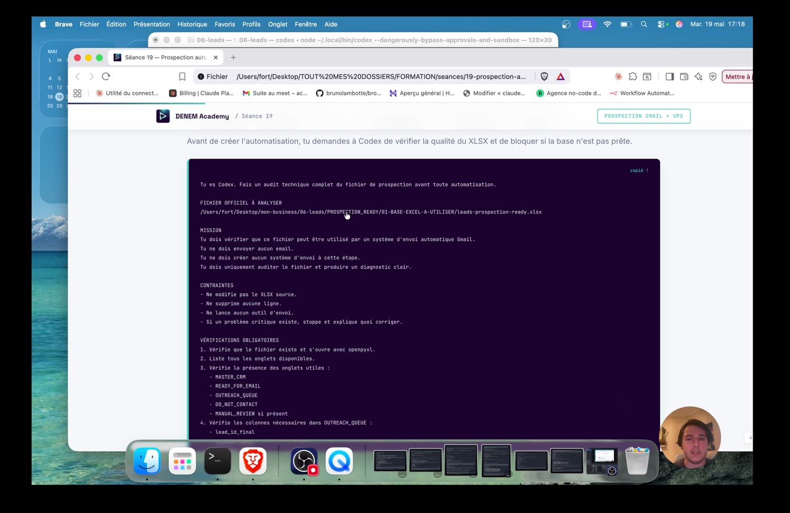
12 · Prompt
12. Prompt à copier : audit avant automatisation
Ce prompt sert à vérifier le fichier et à produire un diagnostic clair avant tout envoi.
Prompt à copier
Tu es Codex. Fais un audit technique complet du fichier de prospection avant toute automatisation.
FICHIER OFFICIEL À ANALYSER
/Users/fort/Desktop/mon-business/06-leads/PROSPECTION_READY/01-BASE-EXCEL-A-UTILISER/leads-prospection-ready.xlsx
MISSION
Tu dois vérifier que ce fichier peut être utilisé par un système d'envoi automatique Gmail.
Tu ne dois envoyer aucun email.
Tu ne dois créer aucun système d'envoi à cette étape.
Tu dois uniquement auditer le fichier et produire un diagnostic clair.
CONTRAINTES
- Ne modifie pas le XLSX source.
- Ne supprime aucune ligne.
- Ne lance aucun outil d'envoi.
- Si un problème critique existe, stoppe et explique quoi corriger.
VÉRIFICATIONS OBLIGATOIRES
1. Vérifie que le fichier existe et s'ouvre avec openpyxl.
2. Liste tous les onglets disponibles.
3. Vérifie la présence des onglets utiles :
- MASTER_CRM
- READY_FOR_EMAIL
- OUTREACH_QUEUE
- DO_NOT_CONTACT
- MANUAL_REVIEW si présent
4. Vérifie les colonnes nécessaires dans OUTREACH_QUEUE :
- lead_id_final
- company_name
- primary_email
- final_class
- quality_status
- outreach_segment
- final_next_action
- campaign_status ou status
- opt_out_status si présent
- notes
5. Compte :
- total lignes MASTER_CRM
- total READY_FOR_EMAIL
- total OUTREACH_QUEUE
- lignes A+
- lignes A
- lignes sans email
- lignes DO_NOT_CONTACT
- lignes en manual review
6. Vérifie que OUTREACH_QUEUE ne contient pas :
- DO_NOT_CONTACT
- opt_out_status rempli
- bounced
- replied
- sent
- email vide
- email invalide
7. Vérifie les doublons par :
- primary_email
- domain
- company_name + city
8. Vérifie que chaque ligne garde une source :
- source_files
- source_urls
- ou équivalent
SORTIES À CRÉER
Dans :
/Users/fort/Desktop/mon-business/06-leads/PROSPECTION_READY/02-AUDIT-AVANT-AUTOMATISATION/
Crée :
- audit-prospection-ready.md
- audit-prospection-ready.csv
FORMAT DU RAPPORT
Le rapport doit dire :
- fichier analysé
- onglets trouvés
- colonnes manquantes
- nombre de leads exploitables
- nombre de leads exclus
- risques détectés
- décision finale : READY ou BLOCKED
MESSAGE FINAL
Réponds seulement :
"Audit terminé.
Décision : READY ou BLOCKED
Leads email exploitables : X
Lignes OUTREACH_QUEUE : Y
Risques critiques : Z
Rapport : audit-prospection-ready.md"13 · XLSX
13. Les onglets attendus ne sont pas décoratifs
Chaque onglet a un rôle. `MASTER_CRM` garde la base, `READY_FOR_EMAIL` prépare les contacts, `OUTREACH_QUEUE` sert à l’envoi, `DO_NOT_CONTACT` protège les exclusions.
| Onglet | Rôle |
|---|---|
| MASTER_CRM | Base finale dédupliquée |
| READY_FOR_EMAIL | Contacts avec email exploitable |
| OUTREACH_QUEUE | File d’attente triée pour la campagne |
| DO_NOT_CONTACT | Tout ce qui ne doit jamais partir |
| MANUAL_REVIEW | Cas à vérifier à la main |
14 · Colonnes
14. Je vérifie les colonnes qui pilotent l’envoi
Une ligne sans statut ou sans action finale n’est pas prête. Le système doit savoir quoi envoyer, à qui, pourquoi, et ce qu’il faut éviter.
lead_id_final
company_name
primary_email
quality_status
outreach_segment
final_next_action
campaign_status
opt_out_status
15 · Décision
15. Le rapport peut bloquer la suite
Dans la séance, l’audit conclut `BLOCKED`. Ce n’est pas un échec : c’est exactement ce que je veux si un risque critique existe.
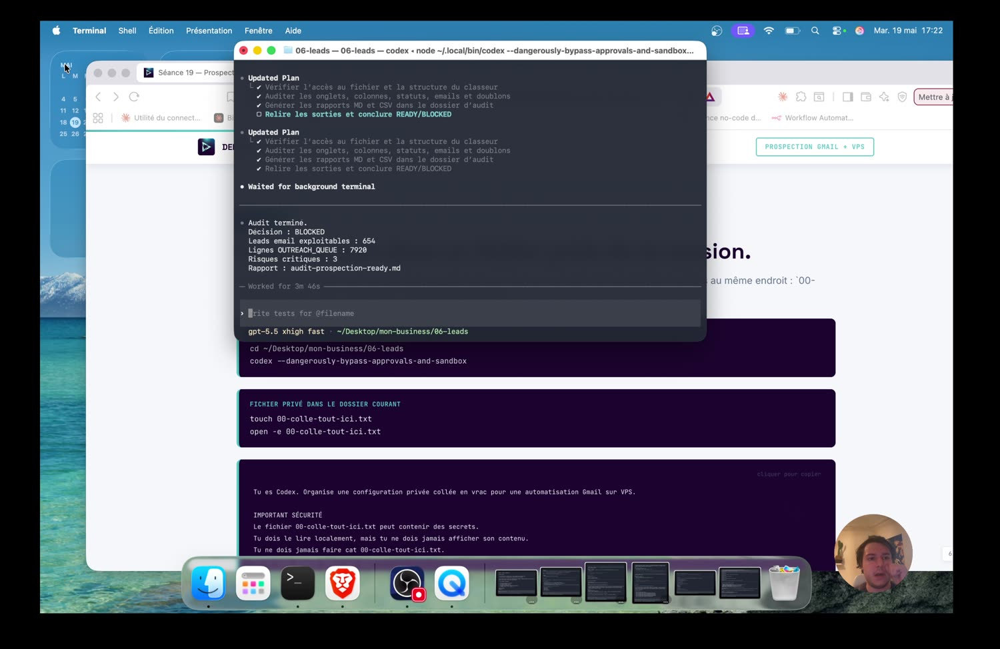
16 · Prudence
16. READY ne veut pas dire envoyer tout de suite
Même si le fichier est bon, je ne lance pas la campagne. Je passe d’abord par la configuration, le déploiement, les tests et l’amélioration du message.
Automatiser vite ne doit jamais remplacer vérifier lentement.
17 · Sécurité données
17. Les exclusions doivent rester exclues
Je refuse que `DO_NOT_CONTACT`, opt-out, bounced, replied ou email invalide se retrouvent dans la file. C’est une règle de protection commerciale.
- 01
Pas de DO_NOT_CONTACT dans OUTREACH_QUEUE
- 02
Pas d’email vide
- 03
Pas de bounced
- 04
Pas de replied
- 05
Pas d’opt-out
- 06
Pas d’adresse invalide
18 · Diagnostic
18. Je compte avant de coder
Les volumes donnent le niveau de risque : nombre de leads email, nombre de lignes dans la queue, doublons, lignes A+, lignes A, anomalies.
| Mesure | Question terrain |
|---|---|
| Leads email exploitables | Combien peuvent partir ? |
| OUTREACH_QUEUE | Quelle file le moteur va lire ? |
| Risques critiques | Qu’est-ce qui bloque ? |
| Doublons | Est-ce que je risque de contacter deux fois ? |
19 · Contrainte
19. Je garde le XLSX source intact
Le prompt interdit de modifier le fichier source. Codex peut lire, auditer et produire des rapports, mais il ne touche pas à la base officielle.
Ne modifie pas le XLSX
Ne supprime aucune ligne
Ne lance aucun outil d’envoi
Explique quoi corriger si c’est bloqué
20 · Sortie
20. Le résultat attendu de l’audit
Je veux une réponse courte qui dit quoi faire ensuite. Pas un roman, pas une promesse : décision, chiffres, risques, rapport.
Commande / consigne
Audit terminé.
Décision : READY ou BLOCKED
Leads email exploitables : X
Lignes OUTREACH_QUEUE : Y
Risques critiques : Z
Rapport : audit-prospection-ready.md21 · Accès
21. Je prépare Gmail, OpenAI et le VPS
Après l’audit, je réunis les trois briques qui feront tourner le système : un compte Gmail, une clé OpenAI, un serveur Hostinger.
Gmail : envoyer et lire les réponses
OpenAI : rédiger les messages
VPS : faire tourner le moteur 24/7
SQLite : mémoriser les statuts
22 · Gmail
22. Si App Passwords est indisponible, je sais pourquoi
Google affiche parfois que le paramètre n’est pas disponible. La raison la plus simple : la validation en deux étapes n’est pas activée.
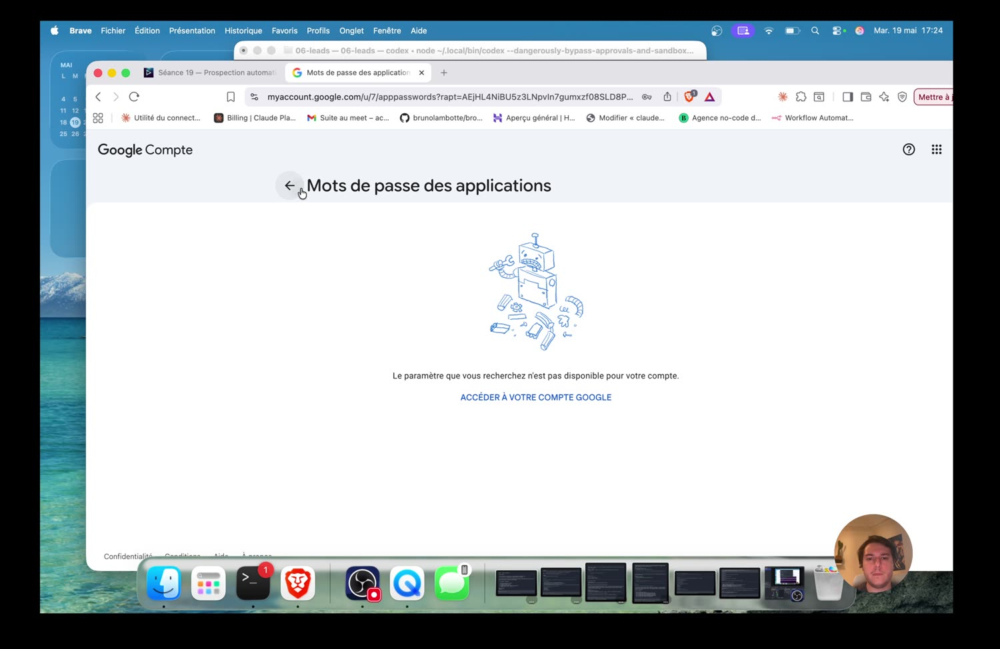
23 · Compte
23. Je sélectionne le bon compte Google
Petit piège : Google peut te renvoyer sur le mauvais compte. Je vérifie l’adresse affichée avant de créer quoi que ce soit.
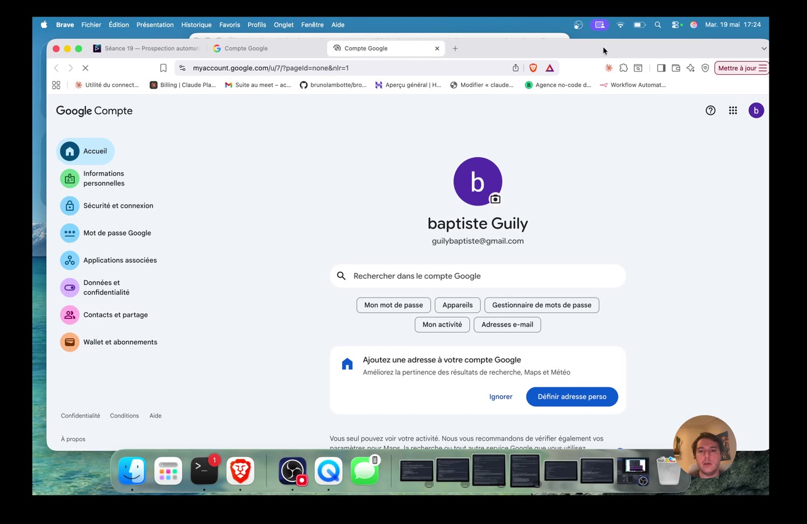
24 · 2FA
24. J’active la validation en deux étapes
Je vais dans Sécurité et connexion, puis Validation en deux étapes. Sans cette étape, Gmail ne donnera pas de mot de passe d’application.
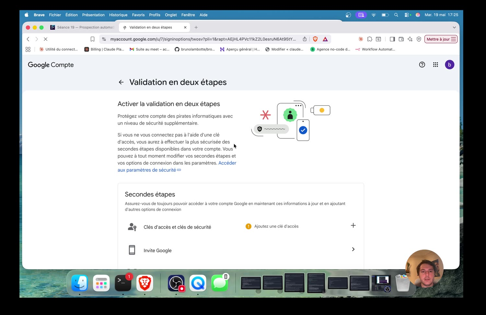
25 · Confirmation
25. Je valide que la 2FA est bien active
Le message de confirmation est important : maintenant le compte peut générer un mot de passe d’application pour l’automatisation.
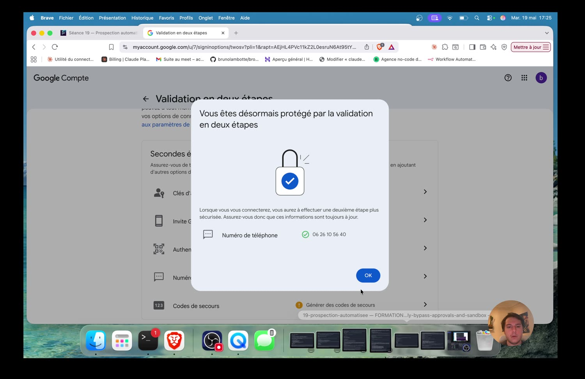
26 · App password
26. Je crée le mot de passe d’application
Je nomme l’application simplement, par exemple `prospection`. Le mot de passe obtenu va dans la configuration privée, jamais dans le prompt public.
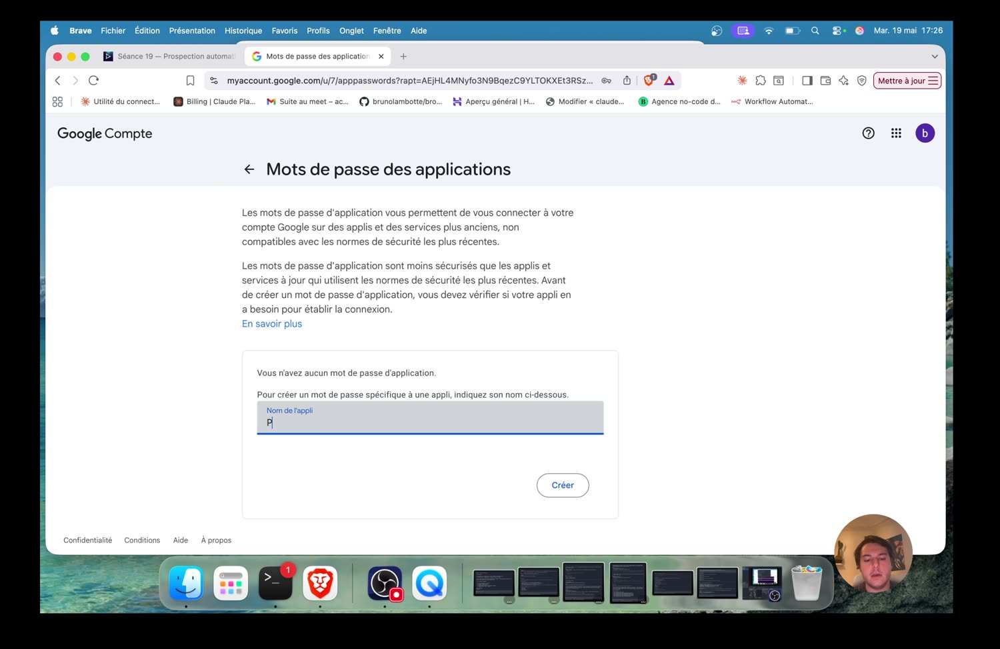
27 · OpenAI
27. Je crée une clé OpenAI dédiée
Je préfère une clé dédiée à la campagne. Si je dois couper le système, je révoque cette clé sans toucher aux autres projets.
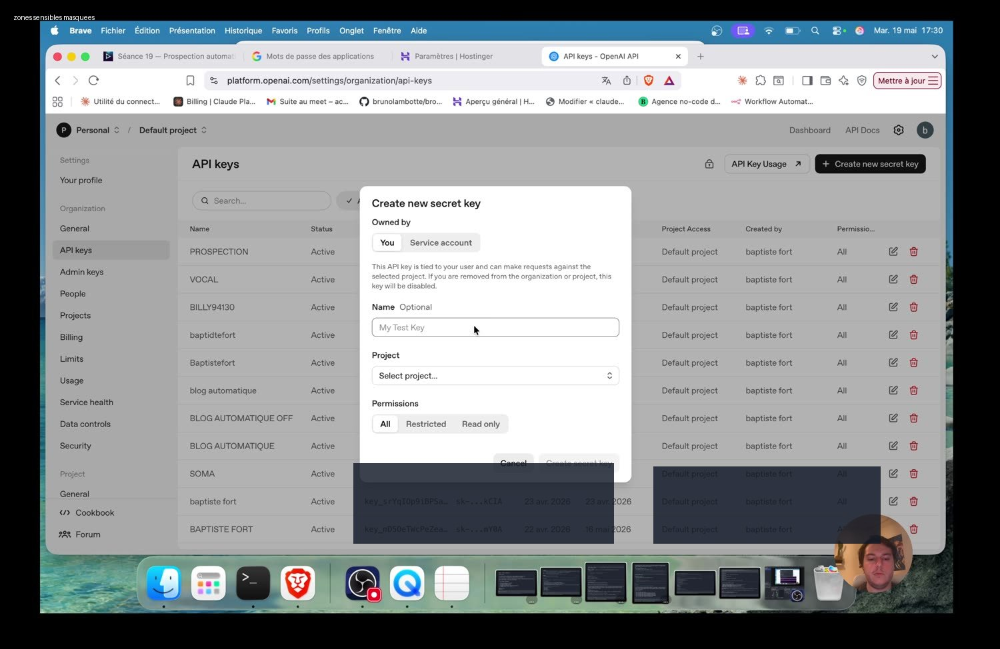
28 · VPS
28. Je récupère les informations Hostinger
J’utilise le même VPS que le blog automatique pour éviter de racheter un serveur. Il me faut l’IP, l’utilisateur SSH, le port et la clé.
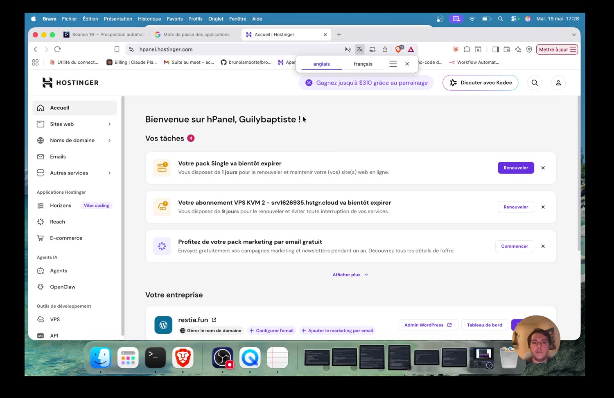
29 · SSH
29. Je protège les infos SSH
Les infos Hostinger sont utiles mais sensibles. Je peux les coller en vrac dans un fichier local, puis laisser Codex extraire sans afficher les valeurs.
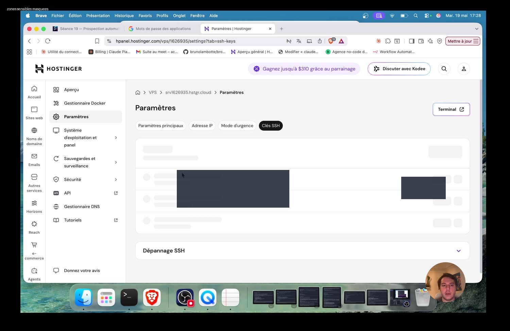
30 · Secrets
30. La règle sécurité : jamais de secret dans la réponse
Codex peut lire localement des fichiers privés si tu lui donnes la mission. Mais il ne doit jamais afficher le contenu de `env`, `deploy.env` ou du fichier brut.
Le bon agent sait utiliser un secret sans le répéter.
31 · Vrac utile
31. Je colle tout en vrac dans un fichier local
Le vrac est acceptable si le prompt est strict. Je mets Gmail, OpenAI, contexte business, offre, calendrier et infos Hostinger dans un fichier temporaire.
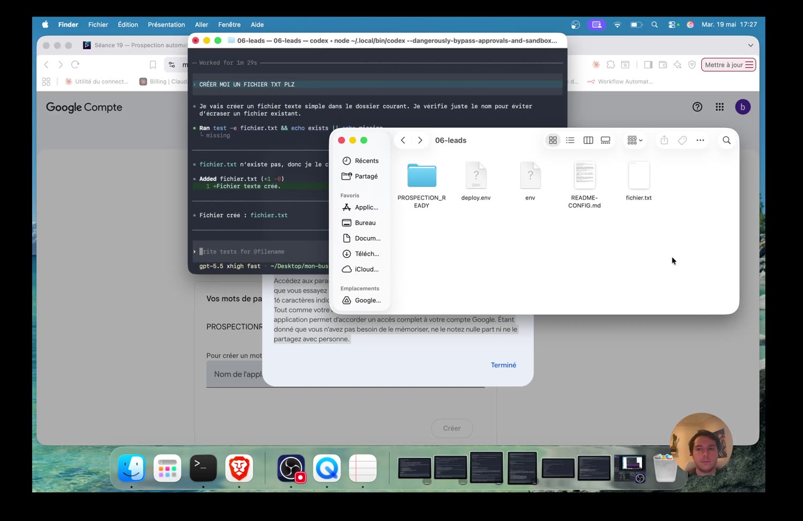
32 · Mini prompt
32. Je demande à Codex de créer le fichier texte
Quand le fichier n’existe pas, je ne le crée pas à la main si Codex peut le faire dans le dossier courant.
Commande / consigne
Créer moi un fichier txt plz33 · Extraction
33. Je fais remplir les variables automatiquement
Je donne le chemin du fichier et je demande à Codex de remplir `env` et `deploy.env` sans afficher les valeurs.
Commande / consigne
/Users/fort/Desktop/mon-business/06-leads/fichier.txt
lis le fichier txt et remplis les variables env stp34 · Prompt
34. Prompt à copier : organiser la configuration privée
Ce prompt transforme le vrac en fichiers propres et ignore les données inutiles Hostinger.
Prompt à copier
Tu es Codex. Organise une configuration privée collée en vrac pour une automatisation Gmail sur VPS.
IMPORTANT SÉCURITÉ
Le fichier 00-colle-tout-ici.txt peut contenir des secrets.
Tu dois le lire localement, mais tu ne dois jamais afficher son contenu.
Tu ne dois jamais faire cat 00-colle-tout-ici.txt.
Tu ne dois jamais faire cat env.
Tu ne dois jamais faire cat deploy.env.
Tu dois retourner seulement les champs trouvés ou manquants, sans afficher les valeurs.
DOSSIER LOCAL
Travaille uniquement dans le dossier courant où Codex a été lancé.
Utilise le dossier courant comme dossier de session.
Ne crée pas un nouveau sous-dossier pour la configuration.
FICHIER PRIVÉ SOURCE
./00-colle-tout-ici.txt
Ce fichier peut contenir en vrac :
- clé OpenAI
- email Gmail
- mot de passe d'application Gmail
- nom d'expéditeur
- email de test
- contexte business
- offre proposée
- lien Calendly ou RDV
- texte brut copié depuis Hostinger
- IP VPS
- user SSH
- commande ssh root@...
- hostname VPS
- informations inutiles Hostinger à ignorer
FICHIERS À PRODUIRE
- env
- deploy.env
- README-CONFIG.md
- .gitignore
EXTRACTION À FAIRE
Depuis 00-colle-tout-ici.txt, détecte :
- OPENAI_API_KEY si une valeur commence par sk-
- GMAIL_EMAIL si une adresse email est fournie
- GMAIL_APP_PASSWORD si un mot de passe Gmail d'application est fourni
- GMAIL_SENDER_NAME si un nom ou prénom est fourni
- TEST_RECIPIENT_EMAIL si une adresse de test est fournie
- BUSINESS_CONTEXT si une description business est fournie
- OFFER_SUMMARY si une offre est fournie
- CALENDAR_LINK si un lien de RDV est fourni
- VPS_IP depuis IPv4 ou depuis une commande ssh root@IP
- SSH_USER depuis Nom d'utilisateur SSH ou ssh USER@IP
- SSH_PORT, mets 22 par défaut si absent
- SSH_KEY_PATH, mets ~/.ssh/blog-auto-codex par défaut si absent
Crée env avec :
OPENAI_API_KEY="valeur extraite ou vide"
OPENAI_MODEL="gpt-4.1-mini"
GMAIL_EMAIL="valeur extraite ou vide"
GMAIL_APP_PASSWORD="valeur extraite ou vide sans espaces"
GMAIL_SENDER_NAME="valeur extraite ou vide"
SMTP_HOST="smtp.gmail.com"
SMTP_PORT="587"
IMAP_HOST="imap.gmail.com"
IMAP_PORT="993"
DAILY_SEND_LIMIT="10"
SEND_WINDOW_START="09:30"
SEND_WINDOW_END="11:30"
TIMEZONE="Europe/Paris"
ALLOW_WEEKEND_SENDS="false"
FOLLOWUP_1_DAYS="3"
FOLLOWUP_2_DAYS="7"
FOLLOWUP_3_DAYS="14"
CAMPAIGN_NAME="prospection-simple"
BUSINESS_CONTEXT="valeur extraite ou vide"
OFFER_SUMMARY="valeur extraite ou vide"
CALENDAR_LINK="valeur extraite ou vide"
TEST_RECIPIENT_EMAIL="valeur extraite ou vide"
DRY_RUN="true"
SEND_REAL_EMAILS="false"
LOCAL_XLSX="/Users/fort/Desktop/mon-business/06-leads/PROSPECTION_READY/01-BASE-EXCEL-A-UTILISER/leads-prospection-ready.xlsx"
REMOTE_XLSX="/opt/prospection-auto/data/leads-prospection-ready.xlsx"
REMOTE_DB="/opt/prospection-auto/campaign.db"
Crée deploy.env avec :
VPS_IP="valeur extraite ou vide"
SSH_USER="valeur extraite ou root"
SSH_PORT="22"
SSH_KEY_PATH="valeur extraite ou ~/.ssh/blog-auto-codex"
REMOTE_DIR="/opt/prospection-auto"
LOCAL_PROJECT_DIR="."
LOCAL_XLSX="/Users/fort/Desktop/mon-business/06-leads/PROSPECTION_READY/01-BASE-EXCEL-A-UTILISER/leads-prospection-ready.xlsx"
Ajoute dans .gitignore :
00-colle-tout-ici.txt
env
.env
deploy.env
*.key
*.pem
__pycache__/
.DS_Store
Dans README-CONFIG.md, explique :
- quoi coller dans 00-colle-tout-ici.txt
- que Codex organise ensuite env et deploy.env
- que les fichiers privés sont ignorés par Git
- que les secrets ne doivent jamais être affichés
- que le mot de passe Gmail doit être un mot de passe d'application
- que SSH_PORT vaut 22 par défaut
- que SSH_KEY_PATH peut rester ~/.ssh/blog-auto-codex si cette clé existe
CONTRÔLE FINAL
Vérifie que les quatre fichiers existent.
Vérifie que .gitignore protège les fichiers privés.
N'affiche aucun secret.
Réponds seulement :
"Configuration organisée.
Fichiers créés : env, deploy.env, README-CONFIG.md, .gitignore
Champs trouvés : liste des noms de champs, sans valeurs
Champs manquants : liste des noms de champs, sans valeurs
Secrets affichés : non"35 · Fichiers
35. Les fichiers attendus sont simples
Je veux quatre fichiers : deux fichiers de configuration, un README d’usage, et un `.gitignore` qui protège tout ce qui est privé.
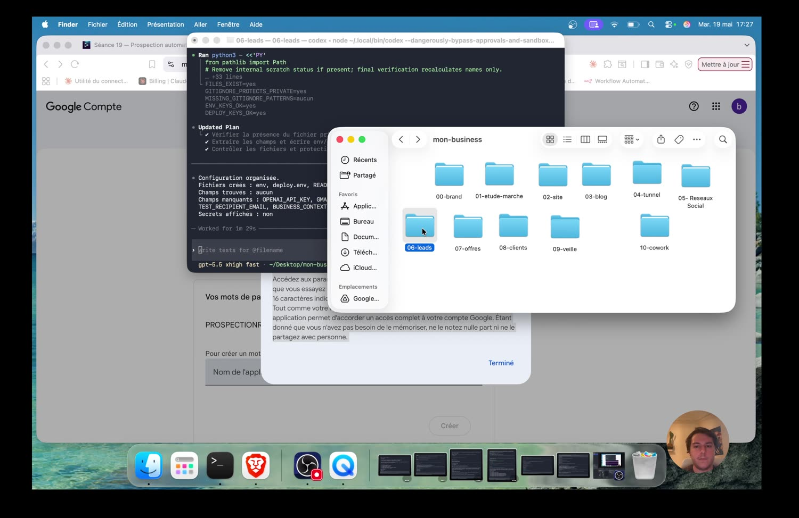
36 · env
36. `env` sert à l’application
Ce fichier contient les variables du moteur : OpenAI, Gmail, limites, fenêtre d’envoi, contexte business, offre et mode dry-run.
| Variable | Rôle |
|---|---|
| OPENAI_API_KEY | Rédaction des emails |
| GMAIL_EMAIL | Compte expéditeur |
| DAILY_SEND_LIMIT | Cadence maximale |
| BUSINESS_CONTEXT | Contexte commercial |
| DRY_RUN | Protection avant envoi réel |
37 · deploy
37. `deploy.env` sert au déploiement
Ce fichier contient l’accès serveur : IP, utilisateur SSH, port, chemin de clé, dossier distant, chemin du XLSX local.
| Variable | Rôle |
|---|---|
| VPS_IP | Adresse du serveur |
| SSH_USER | Utilisateur |
| SSH_PORT | Port, souvent 22 |
| SSH_KEY_PATH | Clé privée locale |
| REMOTE_DIR | Dossier de production |
38 · Validation
38. Je vérifie que Codex ne montre pas les secrets
La bonne sortie liste les champs trouvés ou manquants. Elle ne donne pas les valeurs. C’est ce que je veux voir avant d’aller plus loin.
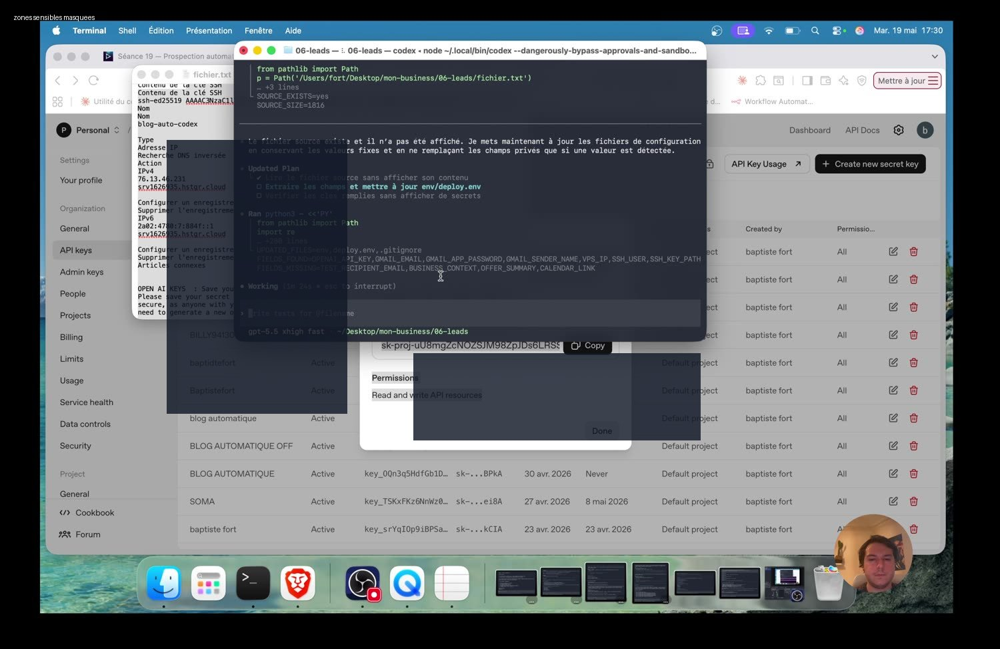
39 · Nettoyage
39. Je nettoie le fichier temporaire
Une fois `env` et `deploy.env` remplis, je demande à Codex de supprimer le fichier texte temporaire et de garder un système réutilisable.
Commande / consigne
Organise les fichiers env.
Supprime le fichier txt stp.
Je veux que tu puisses constamment te connecter au VPS sans me demander.40 · Routine
40. Je garde la configuration dans le dossier de session
L’intérêt est simple : plus tard, je peux rouvrir le dossier, relancer Codex et lui demander d’ajouter des leads ou de modifier une règle sans tout refaire.
Même dossier
Même config
Même VPS
Même base logique
Maintenance rapide
41 · Précheck
41. Je teste les connexions avant de déployer
OpenAI, Gmail SMTP, Gmail IMAP et SSH doivent répondre. Si SSH bloque, je corrige la clé ou le chemin avant de continuer.
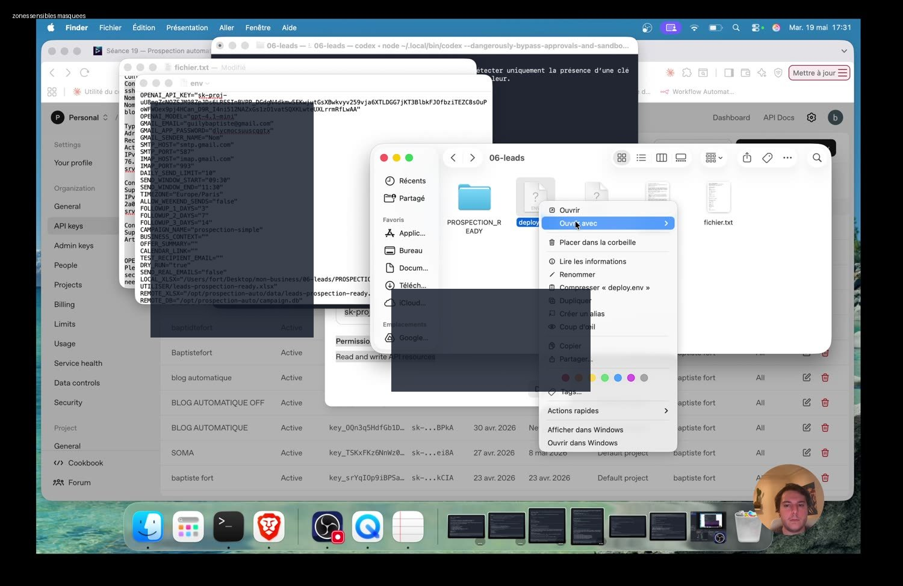
42 · Diagnostic
42. Je ne panique pas si SSH bloque
Dans la séance, le blocage vient d’un chemin de clé configuré qui ne pointe pas vers un fichier existant localement. Le bon réflexe : corriger la config, pas bricoler le serveur.
Vérifier SSH_KEY_PATH
Vérifier permissions de clé
Vérifier user root
Vérifier IP VPS
Relancer un test sans afficher de secret
43 · Prompt
43. Prompt à copier : préparer le VPS
Ce prompt copie la base et la config, crée l’arborescence distante et protège `.env`.
Prompt à copier
Tu es Codex. Déploie la base et la configuration sur le VPS sans afficher les secrets.
FICHIERS LOCAUX
CONFIG_DIR="$(pwd)"
LOCAL_ENV="$CONFIG_DIR/env"
LOCAL_DEPLOY_ENV="$CONFIG_DIR/deploy.env"
LOCAL_XLSX="/Users/fort/Desktop/mon-business/06-leads/PROSPECTION_READY/01-BASE-EXCEL-A-UTILISER/leads-prospection-ready.xlsx"
RÈGLES DE SÉCURITÉ
- Ne fais jamais cat env.
- Ne fais jamais cat deploy.env.
- Ne fais jamais cat .env sur le VPS.
- Ne log jamais OPENAI_API_KEY.
- Ne log jamais GMAIL_APP_PASSWORD.
- Vérifie seulement l'existence et la taille des fichiers.
- Ne lance aucun envoi email pendant cette étape.
MISSION
1. Vérifie que LOCAL_XLSX existe et n'est pas vide.
2. Lis uniquement les variables nécessaires depuis deploy.env sans les afficher.
3. Teste la connexion SSH au VPS.
4. Crée REMOTE_DIR sur le VPS, par défaut /opt/prospection-auto.
5. Crée cette structure :
/opt/prospection-auto/app
/opt/prospection-auto/data
/opt/prospection-auto/logs
/opt/prospection-auto/exports
/opt/prospection-auto/tracking
/opt/prospection-auto/backups
6. Copie env vers /opt/prospection-auto/.env.
7. Mets chmod 600 sur /opt/prospection-auto/.env.
8. Copie leads-prospection-ready.xlsx vers /opt/prospection-auto/data/leads-prospection-ready.xlsx.
9. Mets chmod 640 sur le XLSX.
10. Crée /opt/prospection-auto/DEPLOY_CHECK.md sans secret.
DEPLOY_CHECK.md doit contenir :
- date du déploiement
- chemin du XLSX local
- chemin du XLSX distant
- taille du XLSX distant
- existence de .env sans contenu
- version Python disponible sur le VPS
- résultat du test SSH
MESSAGE FINAL
Réponds seulement :
"Déploiement VPS préparé.
Remote dir : /opt/prospection-auto
XLSX copié : oui/non
.env copié : oui/non
Secrets affichés : non
Prochaine étape : build du système."44 · Serveur
44. L’arborescence VPS reste lisible
Le serveur reçoit un dossier clair : `app`, `data`, `logs`, `exports`, `tracking`, `backups`. Pas de fichiers dispersés.
/opt/prospection-autoappdatalogsexportstrackingbackups
45 · Data
45. Je copie la base au bon endroit
Le XLSX local devient `/opt/prospection-auto/data/leads-prospection-ready.xlsx`. Le moteur lit ce fichier, pas le dossier complet.
Commande / consigne
LOCAL_XLSX=".../leads-prospection-ready.xlsx"
REMOTE_XLSX="/opt/prospection-auto/data/leads-prospection-ready.xlsx"46 · Permissions
46. Je protège `.env` sur le VPS
Le fichier `.env` distant doit exister mais rester fermé : `chmod 600`. Codex vérifie l’existence et la taille, jamais le contenu.
- 01
Ne jamais `cat .env`
- 02
Ne jamais logger OPENAI_API_KEY
- 03
Ne jamais logger GMAIL_APP_PASSWORD
- 04
Vérifier seulement existence + taille
47 · Rapport
47. Le déploiement préparé doit être explicite
Je veux un `DEPLOY_CHECK.md` sans secret : date, chemins, taille du XLSX, version Python et résultat SSH.
date du déploiement
chemin XLSX local
chemin XLSX distant
taille du fichier distant
existence de .env
version Python
48 · Résultat
48. Le VPS est prêt pour le build
Une fois le déploiement préparé, je peux passer à la construction du moteur sans me demander si les fichiers sont au bon endroit.
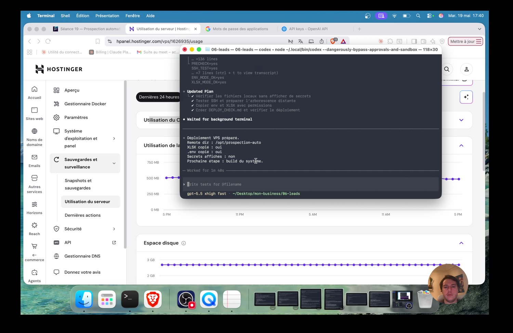
49 · Transition
49. La prochaine étape n’est pas encore l’envoi
Même après le déploiement, je n’envoie rien. Je dois construire le moteur, installer les dépendances, synchroniser les leads et tester.
Déployer la base ne veut pas dire démarrer la campagne.
50 · Traçabilité
50. Je garde un système auditable
Chaque étape produit un rapport : audit du fichier, configuration, déploiement, build. Si un client demande ce qui a été fait, je peux répondre proprement.
audit-prospection-ready.md
README-CONFIG.md
DEPLOY_CHECK.md
BUILD_REPORT.md
outreach-tracking.xlsx
51 · Build
51. Je construis le moteur Python
Le prompt principal demande un vrai système : lecture XLSX, éligibilité, rédaction OpenAI, envoi Gmail, réponses IMAP, relances, SQLite, export.
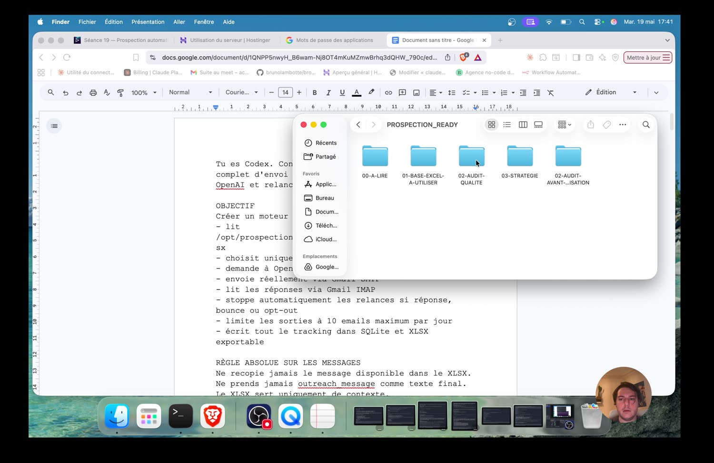
52 · Prompt
52. Prompt à copier : système Gmail + OpenAI
Ce prompt construit le moteur complet sur le VPS. Il est long parce qu’il verrouille les règles critiques.
Prompt à copier
Tu es Codex. Construis sur le VPS un système Python complet d'envoi automatique Gmail avec rédaction OpenAI et relances.
OBJECTIF
Créer un moteur de prospection qui :
- lit /opt/prospection-auto/data/leads-prospection-ready.xlsx
- choisit uniquement les prospects éligibles
- demande à OpenAI de rédiger un nouveau mail
- envoie réellement via Gmail SMTP
- lit les réponses via Gmail IMAP
- stoppe automatiquement les relances si réponse, bounce ou opt-out
- limite les sorties à 10 emails maximum par jour
- écrit tout le tracking dans SQLite et XLSX exportable
RÈGLE ABSOLUE SUR LES MESSAGES
Ne recopie jamais le message disponible dans le XLSX.
Ne prends jamais outreach_message comme texte final.
Le XLSX sert uniquement de contexte.
Chaque email doit être réécrit de zéro par OpenAI.
STYLE OBLIGATOIRE
- très simple
- amical
- naturel
- humain
- court
- sans jargon IA
- sans promesse inventée
- sans pression
- sans fausse personnalisation
- une seule idée
- une seule question
Phrase de sortie obligatoire dans le premier email :
"Si ce n'est pas pertinent, dites-moi simplement et je ne vous relance pas."
ARBORESCENCE
Travaille dans :
/opt/prospection-auto
Crée :
- app/__init__.py
- app/config.py
- app/db.py
- app/models.py
- app/load_leads.py
- app/eligibility.py
- app/ai_writer.py
- app/gmail_sender.py
- app/reply_checker.py
- app/suppression.py
- app/tracking_export.py
- app/run_campaign.py
- requirements.txt
- README.md
- BUILD_REPORT.md
- tests/test_eligibility.py
- tests/test_ai_prompt_contract.py
TECHNIQUE
- Python 3
- venv dans /opt/prospection-auto/.venv
- pandas + openpyxl pour XLSX
- sqlite3 pour campaign.db
- python-dotenv pour /opt/prospection-auto/.env
- smtplib pour smtp.gmail.com:587
- imaplib pour imap.gmail.com:993
- email.message.EmailMessage pour construire les emails
- OpenAI API pour rédiger email initial et relances
- logging avec masquage des emails et secrets
CONFIG
Lis uniquement /opt/prospection-auto/.env.
Variables attendues :
- OPENAI_API_KEY
- OPENAI_MODEL
- GMAIL_EMAIL
- GMAIL_APP_PASSWORD
- GMAIL_SENDER_NAME
- SMTP_HOST
- SMTP_PORT
- IMAP_HOST
- IMAP_PORT
- DAILY_SEND_LIMIT
- SEND_WINDOW_START
- SEND_WINDOW_END
- TIMEZONE
- ALLOW_WEEKEND_SENDS
- FOLLOWUP_1_DAYS
- FOLLOWUP_2_DAYS
- FOLLOWUP_3_DAYS
- BUSINESS_CONTEXT
- OFFER_SUMMARY
- CALENDAR_LINK
- TEST_RECIPIENT_EMAIL
- DRY_RUN
- SEND_REAL_EMAILS
BASE SQLITE
Crée campaign.db avec ces tables :
- leads
- messages
- events
- suppression_list
- daily_counters
- run_logs
Table leads minimum :
- lead_id_final
- company_name
- primary_email
- domain
- website
- city
- source_files
- source_urls
- final_class
- quality_status
- outreach_segment
- final_next_action
- campaign_status
- opt_out_status
- current_step
- next_action_at
- last_sent_at
- replied_at
- bounced_at
- stopped_reason
- raw_context_json
Table messages minimum :
- id
- lead_id_final
- step
- subject
- body
- status
- sent_at
- gmail_message_id
- error_message
ÉLIGIBILITÉ
Un lead peut recevoir un email seulement si :
- primary_email existe
- primary_email semble valide
- quality_status vaut CLEAN_READY ou READY_WITH_WARNING
- final_class vaut A+ ou A
- campaign_status vaut draft, pending_review, pending ou vide
- opt_out_status est vide
- le lead n'est pas dans DO_NOT_CONTACT
- le lead n'est pas dans suppression_list
- il n'a pas déjà répondu
- il n'a pas déjà bounced
- il n'est pas marqué do_not_contact
CADENCE
- DAILY_SEND_LIMIT par défaut 10.
- Ce plafond inclut emails initiaux et relances.
- Priorité du jour : relances dues d'abord, nouveaux emails ensuite.
- Pas d'envoi samedi/dimanche si ALLOW_WEEKEND_SENDS=false.
- Stop immédiat si Gmail renvoie quota, auth error ou trop d'erreurs SMTP.
SÉQUENCE
- Email initial : J0
- Relance 1 : J+3
- Relance 2 : J+7
- Relance 3 : J+14
- Après relance 3, stop avec status finished_no_reply.
RELANCES
Chaque relance doit être un vrai nouveau message.
Interdit :
- "up"
- "je relance juste"
- copier-coller de l'email précédent
- culpabiliser le prospect
Relance 1 :
- très courte
- polie
- rappelle le contexte en une phrase
- question simple
Relance 2 :
- apporte un angle concret selon outreach_segment
- donne un exemple d'usage plausible sans inventer de résultat
Relance 3 :
- dernier message propre
- sortie élégante
- aucune pression
STOP AUTOMATIQUE
Avant chaque envoi, lance check-replies.
Stoppe le lead si :
- réponse détectée
- bounce détecté
- opt-out détecté
- mots-clés dans réponse : stop, désinscrire, ne me relancez pas, pas intéressé, unsubscribe, retirez-moi, suppression
COMMANDES CLI
Créer ces commandes :
- python -m app.run_campaign --sync-leads
- python -m app.run_campaign --audit-leads
- python -m app.run_campaign --status
- python -m app.run_campaign --send-test
- python -m app.run_campaign --check-replies
- python -m app.run_campaign --send-daily
- python -m app.run_campaign --export-tracking
- python -m app.run_campaign --dry-run
DRY RUN
Par défaut, DRY_RUN=true et SEND_REAL_EMAILS=false.
Si DRY_RUN=true, le système rédige et logge, mais n'envoie pas.
Pour envoyer réellement, il faut DRY_RUN=false et SEND_REAL_EMAILS=true.
TEST RÉEL
--send-test doit envoyer un vrai email uniquement à TEST_RECIPIENT_EMAIL.
Il doit utiliser Gmail SMTP et OpenAI.
Il ne doit jamais envoyer à un prospect pendant le test.
CRON
Prépare sans activer automatiquement :
0 9 * * MON-FRI cd /opt/prospection-auto && /opt/prospection-auto/.venv/bin/python -m app.run_campaign --send-daily >> /opt/prospection-auto/logs/cron.log 2>&1
TESTS
Ajoute des tests minimum pour :
- exclure DO_NOT_CONTACT
- exclure email vide
- exclure opt_out
- prioriser relances dues avant nouveaux emails
- vérifier que le prompt IA interdit de copier le XLSX
- vérifier que la limite DAILY_SEND_LIMIT est respectée
LIVRABLE FINAL
1. Installe requirements dans .venv.
2. Lance les tests.
3. Lance --sync-leads.
4. Lance --audit-leads.
5. Lance --status.
6. Ne lance pas --send-daily.
7. Écris BUILD_REPORT.md avec :
- fichiers créés
- commandes disponibles
- statut des tests
- nombre de leads importés
- nombre de leads éligibles
- prochaines commandes à lancer
MESSAGE FINAL
Réponds seulement :
"Système Gmail/OpenAI construit.
Tests : OK ou détails
Leads importés : X
Leads éligibles : Y
Mode actuel : DRY_RUN
Envoi réel lancé : non
Prochaine étape : send-test."53 · Règle message
53. Je force OpenAI à réécrire
Le fichier XLSX contient du contexte, pas le texte final. Chaque email doit être rédigé de zéro par OpenAI.
Ne recopie jamais `outreach_message`. Le XLSX sert de contexte, pas de script final.
54 · Eligibility
54. L’éligibilité protège la campagne
Un lead ne peut partir que s’il remplit toutes les conditions : email valide, bon statut, bonne classe, pas d’opt-out, pas de réponse, pas de bounce.
- 01
primary_email existe
- 02
quality_status OK
- 03
final_class A+ ou A
- 04
campaign_status compatible
- 05
opt_out_status vide
- 06
pas dans suppression_list
55 · SQLite
55. La base SQLite garde la mémoire
Le moteur ne doit pas oublier ce qu’il a fait. SQLite garde les leads, les messages, les événements, les suppressions, les compteurs et les logs.
| Table | Utilité |
|---|---|
| leads | État de chaque prospect |
| messages | Email initial et relances |
| events | Historique des actions |
| suppression_list | Opt-out et exclusions |
| daily_counters | Limite quotidienne |
| run_logs | Logs d’exécution |
56 · Priorité
56. Les relances passent avant les nouveaux emails
Chaque jour, le moteur traite d’abord les relances dues, puis seulement les nouveaux leads. Sinon les suivis deviennent incohérents.
check-repliesrelances duesnouveaux emailsexport trackinglogs
57 · Timeline
57. La séquence est simple
Email initial à J0, relance à J+3, nouvel angle à J+7, dernier message à J+14. Après, on stoppe proprement.
J0 : email initial
J+3 : rappel léger
J+7 : nouvel angle
J+14 : dernier message
Fin : finished_no_reply
58 · Stop
58. Les réponses stoppent tout
Avant chaque envoi, le système vérifie Gmail IMAP. Une réponse, un bounce ou un opt-out arrête les relances.
Réponse détectée
Bounce détecté
Mot-clé opt-out
Statut do_not_contact
Suppression list
59 · Dry run
59. Le dry-run protège le lancement
Par défaut, `DRY_RUN=true` et `SEND_REAL_EMAILS=false`. Le moteur peut rédiger et logger sans envoyer aux prospects.
| Mode | Effet |
|---|---|
| DRY_RUN=true | Rédige et logge sans envoyer |
| SEND_REAL_EMAILS=false | Bloque l’envoi réel |
| --send-test | Envoie seulement à TEST_RECIPIENT_EMAIL |
| --send-daily | Envoi réel si flags activés |
60 · CLI
60. Les commandes CLI rendent le système pilotable
Je veux des commandes simples pour synchroniser, auditer, tester, vérifier les réponses, envoyer et exporter le tracking.
Commande / consigne
python -m app.run_campaign --sync-leads
python -m app.run_campaign --audit-leads
python -m app.run_campaign --status
python -m app.run_campaign --send-test
python -m app.run_campaign --check-replies
python -m app.run_campaign --send-daily
python -m app.run_campaign --export-tracking61 · Test réel
61. Je teste d’abord sur moi
Le test réel part uniquement vers `TEST_RECIPIENT_EMAIL`. Il valide Gmail SMTP et OpenAI sans toucher les prospects.
Commande / consigne
cd /opt/prospection-auto
/opt/prospection-auto/.venv/bin/python -m app.run_campaign --send-test62 · Contrôle qualité
62. Un système qui envoie peut encore être mauvais
Dans la séance, l’email part bien. Mais le message est faible : il parle de privatisation et groupes sans contexte clair. Je ne valide pas ça.
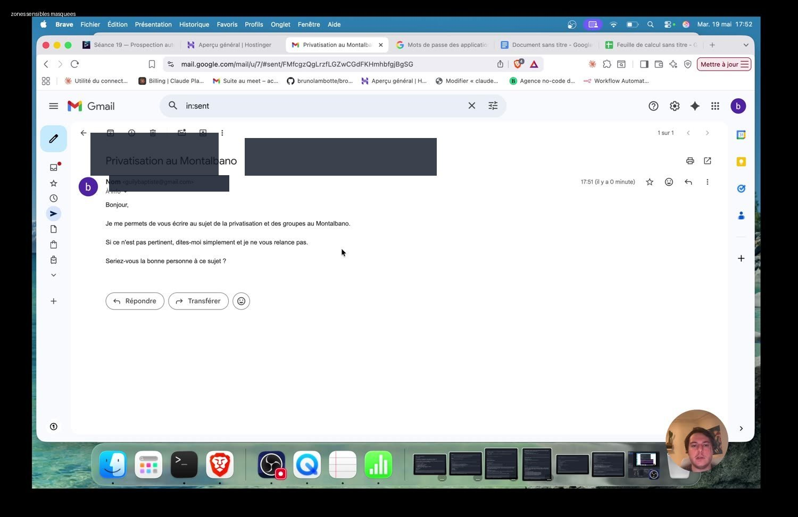
63 · Relecture
63. Je lis le mail comme un prospect
Je ne regarde pas seulement si Gmail a reçu le message. Je me demande : est-ce que je répondrais ? Est-ce que je comprends ? Est-ce que le ton est humain ?
Compréhension immédiate
Phrase courte
Une seule question
Pas de jargon
Pas de pression
64 · Erreur fréquente
64. Je refuse la phrase molle
La phrase “je me permets de vous écrire au sujet de...” sonne générique. Je veux un message direct, clair, amical.
| À éviter | À viser |
|---|---|
| Je me permets de vous écrire au sujet de... | Bonjour, je travaille sur un sujet simple : mieux traiter [douleur]. |
| Un paragraphe compact | Des lignes courtes |
| Question floue | Une question simple |
65 · Prompt
65. Prompt à copier : corriger le style
Ce prompt sert quand l’email est envoyé mais ne convertira pas. Je garde le système, je corrige le cerveau rédactionnel.
Prompt à copier
Faut que ce soit bien plus court et structuré.
Saute des lignes.
Je veux que le message soit plus amical et plus transparent.
Je ne veux pas de phrase lourde du type : "Je me permets de vous écrire au sujet de la privatisation et des groupes".
Objectif :
- comprendre la ligne complète du fichier XLSX
- parler du vrai sujet du lead
- faire un email court
- garder une seule question simple
- éviter le ton commercial
- garder la phrase de sortie : "Si ce n'est pas pertinent, dites-moi simplement et je ne vous relance pas."
Relance un test sur le troisième lead éligible.66 · Pilotage
66. Je challenge Codex comme un directeur commercial
C’est toi le boss. Codex exécute, mais tu décides du ton, de la stratégie, de la question et du niveau de pression.
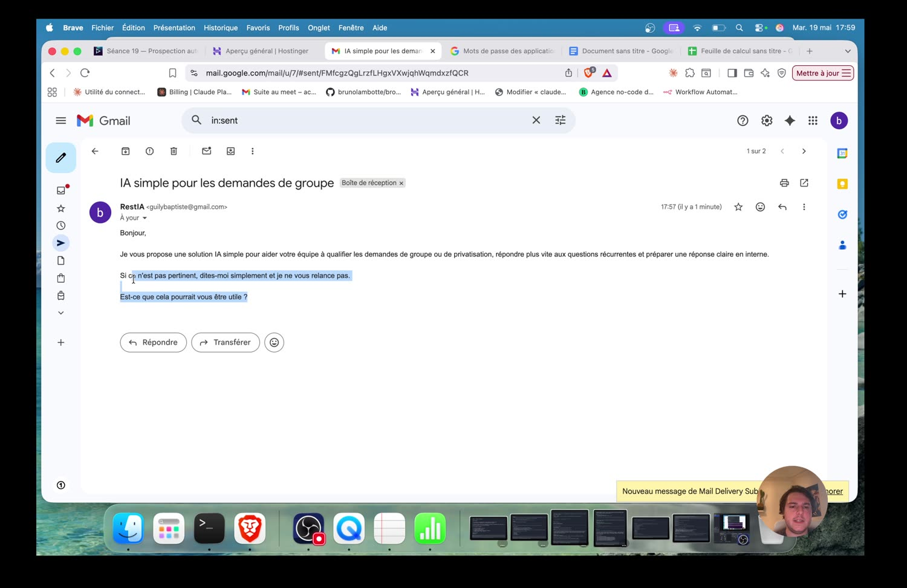
67 · Itération
67. Les phases d’ajustement sont normales
Passer 10 ou 15 minutes à corriger le message est rentable. Un mauvais email répété tous les jours crée un mauvais système tous les jours.
Le plus important n’est pas que ça parte. Le plus important, c’est que ça donne envie de répondre.
68 · Nouveau test
68. Je teste un troisième lead
Je ne corrige pas en théorie. Je relance un test sur un autre lead éligible pour vérifier que la personnalisation tient sur plusieurs lignes.
Changer de lead test
Comparer le sujet
Regarder la longueur
Vérifier la question
Relire la phrase de sortie
69 · Résultat
69. Le bon email respire
La version améliorée est plus courte, plus aérée, plus concrète. Elle parle d’un sujet que le lead peut comprendre rapidement.
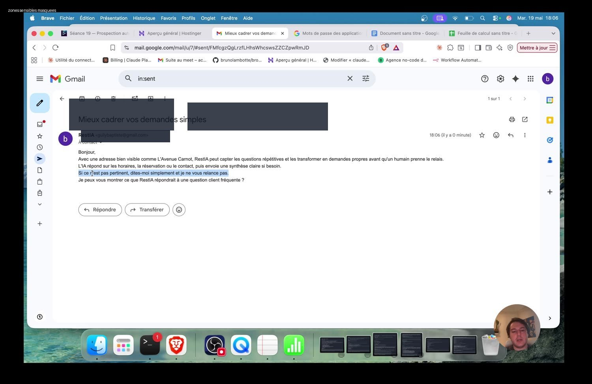
70 · Prompt
70. Prompt à copier : renforcer la pipeline
Quand le style est presque bon, je pousse le système vers une vraie pipeline de prospection : prise de RDV ou question simple selon la stratégie.
Prompt à copier
Améliore le système de prompting pour créer une vraie pipeline de prospection.
Je veux des messages qui donnent envie de répondre, pas seulement des messages techniquement corrects.
Contraintes :
- email initial très court
- 1 idée par email
- ton humain et direct
- pas de promesse inventée
- pas de jargon IA
- si mon lien calendrier existe, propose-le seulement quand le message le justifie
- sinon garde une question simple pour démarrer l'échange
Relance un test et montre-moi uniquement le résultat utile, sans afficher de secret.71 · Exigence
71. Je ne me satisfais pas d’une automatisation moyenne
Le système était fonctionnel, mais les messages ne convertissaient pas assez. Je l’améliore au lieu de cocher “terminé”.
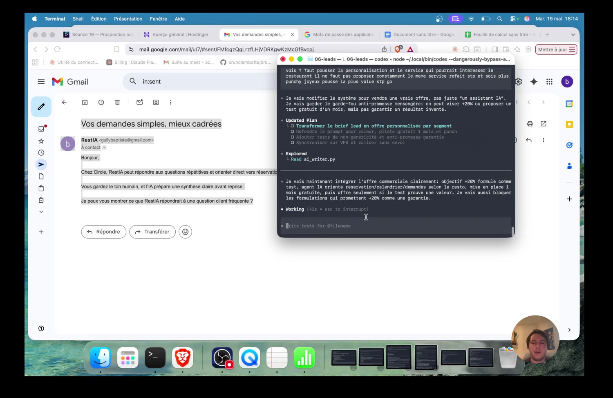
72 · Suivi
72. Le tracking doit rester exportable
Je veux pouvoir ouvrir un fichier de tracking et voir ce qui est parti, qui a répondu, qui est stoppé, et quel compteur reste disponible.
| Champ | Pourquoi |
|---|---|
| lead_id_final | Retrouver le prospect |
| step | Initial ou relance |
| sent_at | Historique |
| status | Succès ou erreur |
| stopped_reason | Pourquoi on arrête |
| daily_count | Respect du plafond |
73 · Planification
73. Le cron est préparé, pas activé à l’aveugle
Je prépare la commande cron, mais je ne la lance qu’après validation du mode réel, des tests et du style email.
Commande / consigne
0 9 * * MON-FRI cd /opt/prospection-auto && /opt/prospection-auto/.venv/bin/python -m app.run_campaign --send-daily >> /opt/prospection-auto/logs/cron.log 2>&174 · Activation
74. Le mode réel se déclenche volontairement
Pour passer en production, je change deux flags. Ce double verrou évite de déclencher une campagne par accident.
| Variable | Avant test | Production |
|---|---|---|
| DRY_RUN | true | false |
| SEND_REAL_EMAILS | false | true |
75 · Run
75. La commande quotidienne reste simple
Une fois prêt, le moteur peut envoyer la journée. La limite quotidienne et les relances dues restent gérées par le code.
Commande / consigne
cd /opt/prospection-auto
/opt/prospection-auto/.venv/bin/python -m app.run_campaign --send-daily76 · Client
76. Je sais vendre la maintenance
Un client veut ajouter des leads ou changer le ton ? Je rouvre le dossier, je lance Codex, et je modifie le système sans repartir de zéro.
Ajouter des leads
Changer l’offre
Modifier le ton
Brancher un autre Gmail
Changer la limite quotidienne
77 · Finalisation
77. Le système est maintenant planifié
La fin de séance montre le système prêt à tourner : tests, sécurité, API, Gmail, VPS, planification.
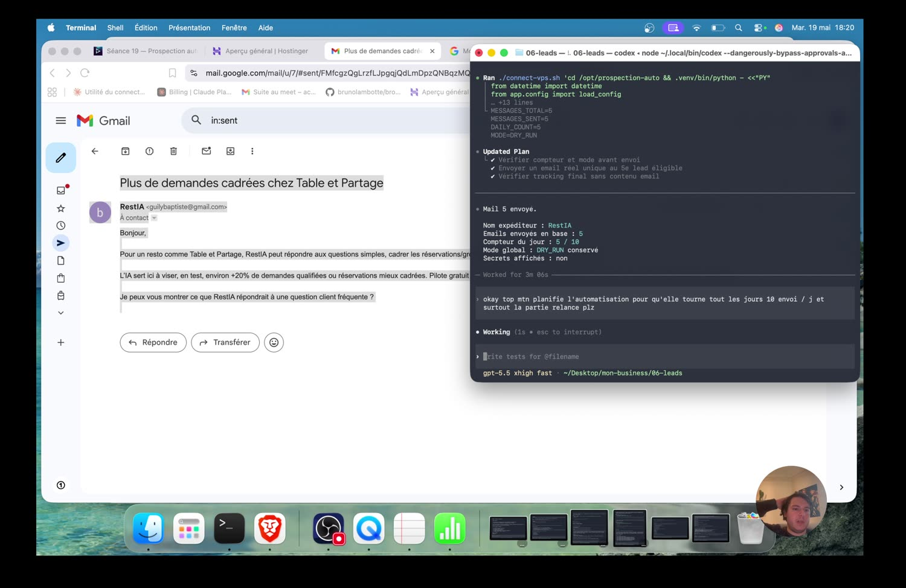
78 · Synthèse
78. Ce que tu dois retenir
La compétence n’est pas “envoyer des emails”. La compétence, c’est cadrer une automatisation complète, la sécuriser, la tester et l’améliorer jusqu’à ce qu’elle soit utile.
- 01
Un fichier officiel
- 02
Un audit bloquant
- 03
Des secrets protégés
- 04
Un VPS structuré
- 05
Un moteur testable
- 06
Des emails corrigés
- 07
Un tracking clair
79 · Pièges
79. Les erreurs fréquentes à éviter
La plupart des problèmes viennent d’un mauvais dossier, d’un secret affiché, d’un email moyen ou d’un cron lancé trop tôt.
| Erreur | Correction |
|---|---|
| Lancer Codex au mauvais endroit | Vérifier le dossier courant |
| Coller les secrets dans le prompt | Utiliser un fichier local privé |
| Envoyer après un seul test | Tester plusieurs leads |
| Accepter un email faible | Corriger le style |
| Activer le cron trop vite | Garder dry-run puis basculer |
80. La machine est prête, mais je garde le contrôle
À la fin, tu as une méthode réutilisable : audit, config, déploiement, build, test, correction, production. C’est une base solide pour créer des systèmes IA facturables.
- Je sais partir d’une base XLSX propre
- Je sais préparer Gmail/OpenAI/VPS
- Je sais demander un moteur Python complet
- Je sais tester sans envoyer aux prospects
- Je sais corriger le message avant production